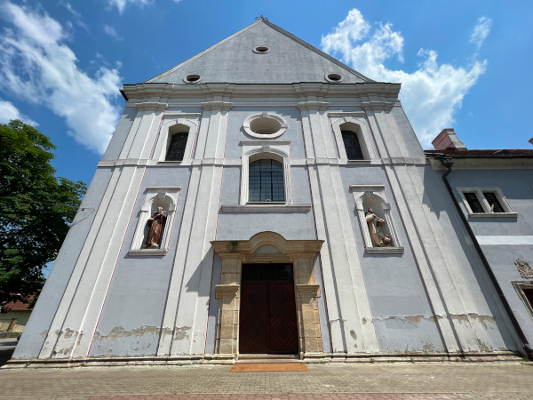
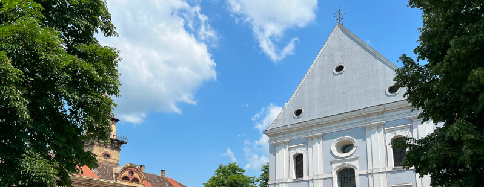

Galerija slika




Samostan u Brodu je izgrađen krajem 17. stoljeća i prvotno je pripadao Provinciji Bosne Srebrene. Kasnije, 1757. godine, samostan je prešao pod jurisdikciju Provincije sv. Ivana Kapistrana, koja je obuhvaćala franjevačke samostane na području Habsburške Monarhije. Godine 1900. osnovana je Hrvatska franjevačka provincija sv. Ćirila i Metoda, kojoj je brodski samostan tada pripao. Samostan je barokni kompleks sagrađen u potpunosti od opeke. Sastoji se od jednobrodne crkve Presvetog Trojstva s tri para bočnih kapela, niskog zvonika uz sjevernu stranu svetišta te četverokrilnog jednokatnog samostana koji se nalazi uz južnu stranu crkve.
Prvi pisani tragovi o djelovanju franjevaca u Brodskoj župi potječu iz 1623. godine, što znači da su franjevci bili prisutni i ranije. Franjevci su obavljali dušobrižničku službu u Brodu i vjerojatno su imali i svoju kuću i crkvu. Samostanske kronike koje su se redovito vodile od 1737. godine pružaju obilje informacija o životu franjevaca, ali i o političkim i društvenim događanjima u Brodu i široj zajednici od sredine 18. stoljeća do suvremenog doba. Godine 1694., nakon oslobođenja Broda od Osmanlija, franjevačka kuća u Velikoj je proglašena rezidencijom zahvaljujući djelovanju oca Augustina Jarića, koji je postao zapovjednik Broda. Franjevački samostan i crkva od drva izgrađeni su tada i trajali su od 1694. do 1727. godine. Postoji naznaka da je samostan imao dva trakta i bio je izgrađen nešto istočnije od današnjeg položaja, ali nema potvrde za tu tvrdnju osim pisanih zapisa.
Gradnja zidane franjevačke građevine započela je 12. kolovoza 1727. godine polaganjem kamena temeljca crkve. Gradnja kompleksa je trajala dugi niz godina i odvijala se u fazama, ovisno o donacijama i darovima Brođana te trudu i strpljenju braće franjevaca. Zapadno krilo samostana izgrađeno je 1727., južno 1729., a istočno između 1768. i 1770. godine. Gradnja crkve je također započela 1727., prekinuta je nakratko, a starija drvena crkva se koristila u međuvremenu. Radovi su nastavljeni 1743. i završeni oko 1753. godine. Tijekom sljedećih desetljeća obavljeno je uređenje i opremanje crkve. 1787. godine, dekretom cara Josipa II, ukinut je brodski franjevački samostan zajedno s drugim redovničkim zajednicama. Samostan je tada služio u prosvjetne i gospodarske svrhe sve do 1806. godine, kada je ponovno uspostavljen. Tijekom tog razdoblja, franjevci su obavljali popravke, preinake i uređenja samostana kako bi zadovoljili potrebe franjevačke i šire zajednice. Za vrijeme Prvog svjetskog rata samostan je služio kao vojna bolnica od 1914. do 1918. godine. Nakon odlaska vojske, samostan je ostao u lošem stanju. Veća obnova samostana, uključujući obnovu baroknog inventara, provedena je 1919. godine pod vodstvom graditelja oltara Alojzija Zorattija iz Maribora.
